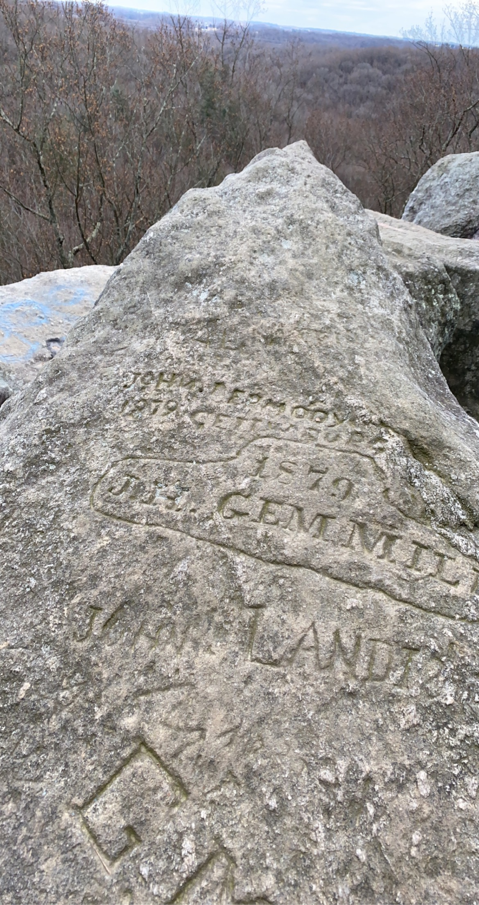

Hiking
Hiking is my ultimate exercise and outdoor escape. It's more than just staying active; it's a way to immerse myself in nature. Whether conquering challenging trails or taking a leisurely stroll, hiking offers both physical fitness and mental tranquility. The sights and sounds of the outdoors inspire me, providing a sense of accomplishment and a much-needed break from daily life.
